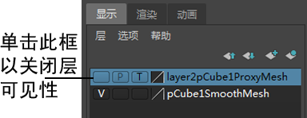

显示或隐藏代理和/或平滑网格
- 在创建细分曲面代理时，确保以下选项处于启用状态：
- 层中的细分曲面代理(Subdiv Proxy In Layer)
- 平滑层中的网格(Smooth Mesh in Layer)
Maya 会将两种网格都添加到“层编辑器”(Layer Editor)中的新层。
- 在“层编辑器”(Layer Editor)中，单击“显示”(Display)选项卡，再单击每个网格名称旁边的可见性图标。 
使代理和/或平滑网格透明
- 将新材质指定给相应的网格。请参见将材质指定给曲面。
- 在“属性编辑器”(Attribute Editor)中打开材质节点，然后调整“透明度”(Transparency)属性。
切换细分曲面代理显示模式
- 按 Ctrl + Shift + ~。 提示： 如果对象未切换到细分曲面代理显示模式，请在“细分曲面代理选项”(Subdiv Proxy Options)（“网格 > 平滑代理 > 细分曲面代理”(Mesh > Smooth Proxy > Subdiv Proxy) >
 ）中启用“切换细分曲面代理”(Toggle Subdiv Prox)。
）中启用“切换细分曲面代理”(Toggle Subdiv Prox)。